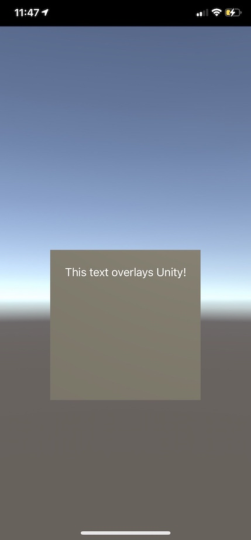

Unity 2020 Integration With SwiftUI
At the time of writing, there is currently no available example that demonstrates how to integrate Unity as library into an iOS application using SwiftUI. This blog post shares my solution to the problem hoping it can help others.
I have now an improved integration sample, with a blog post detailing how it works.
Introduction#
The solution given in this blog post works with Unity 2020.2.1f1 and XCode 12.3.
This blog post will be less graphics-oriented than the usual ones. I am anyway hoping that this writing can help the community!
When I first tried to integrate Unity into an iOS native application, I had a few goals in mind that needed more information than what I could at the time on StackOverflow and public repositories.
This article will show you how to:
- Integrate Unity in an application using the SwiftUI lifecycle
- Add native views overlaying Unity’s rendering
- Communicate efficiently data from Unity to the native side
- Communicate efficiently data from the native side to Unity
Spoiler alert: the last bullet point doesn’t use sendMessageToGOWithName()!
Build#
iOS Example App#
Let’s build an iOS application that will host your Unity game. You can either start it from scratch, or skip this step to directly integrate Unity in an existing app.
If you decide to create a new application, please remember to select the
SwiftUI App lifecycle.
You can use any lifecycle you prefer. Obviously, the integration may be different than what is show here, but the overall code should remain identical.
Unity Project Generation#
Let’s build our Unity project. Building for iOS will generate the UnityFramework framework described in the
doc.
If you want to strictly follow my example respository, I exported the project
at unityapp/Build/iOS.
Workspace#
In order to easily share code between those two projects, we are going to create an XCode workspace. Create a workspace and reference your Unity project as well as your example.
For more information about how to create a workspace and add the UnityFramework
as a dependendcy, please have a look at the example from Unity Technologies.
This step isn’t mandatory but matches the example from the Unity team. You can directly add the the Unity framework as a dependency to your native application.
Integrate Unity#
Getting into the interesting stuff. The process I will describe here is similar to the one from the Unity example repository.
Let’s start first by writing a singleton that will manage the Unity instance:
Thanks to Simon Tysland for sharing the original UnityEmbeddedSwift.swift
file that was wrapping the Unity framework management in Swift
The UnityBridge class is used to:
- Load the UnityFramework at runtime, i.e., open the
UnityFramework.frameworkfile, and get the exported instance - Run the Unity instance
- Show the Unity instance on the phone
Note that only one instance can live in your entire process. If you completely kill this instance, there will be no way to start it again.
Just keep in mind that the unityDidUnload() method is triggered by Unity when the
framework is unloaded. This is possible because we first registered our UnityBridge
object as a delegate with the call:
ufw.register(self)
Let’s try our wrapper to ensure it’s properly working. We are going to display our game in the background, and overlay some text made with the SwiftUI framework.
ContentView.swift
import SwiftUI
struct MyViewController: UIViewControllerRepresentable {
func makeUIViewController(context _: Context) -> UIViewController {
let vc = UIViewController()
let unity = UnityBridge.getInstance()
unity.show(controller: vc)
return vc
}
func updateUIViewController(_: UIViewController, context _: Context) {
// Empty.
}
}
struct ContentView: View {
var body: some View {
ZStack {
MyViewController()
Text("This text overlays Unity!")
}
}
}
struct ContentView_Previews: PreviewProvider {
static var previews: some View {
ContentView()
}
}
Let’s run the native app and appreciate the result:

As you can see, Unity doesn’t display anything. However, looking at the console we can see it running.
It looks like Unity needs some delay after it’s instanciaed and before it can show up. I haven’t figure out why yet; maybe the framework re-create a view asynchroneously. I will definitely update this blog post whenever I have the answer.
In the meantime, you can fix this issue by adding a small delay on the main thread:
ContentView.swift
struct MyViewController: UIViewControllerRepresentable {
func makeUIViewController(context _: Context) -> UIViewController {
let vc = UIViewController()
let unity = UnityBridge.getInstance()
DispatchQueue.main.asyncAfter(deadline: .now() + 0.5) {
unity.show(controller: vc)
}
return vc
}
...
}
...

Right now, you may be thinking that this is a gross hack. You are right.
For my use case, this isn’t too much of an issue. I need to expose an API from Unity that would allow the native iOS app to query vertices, to update some meshes, etc… Such an API shouldn’t be available before the appropriate GameObjects are instanciated and ready to be queried.
Instead of using a made up delay like that, I am going to only assumes Unity is ready when my scene and all the GameObjects are ready. When they are, a Unity script will notify the native app that it can start showing Unity.
Before looking at the code for the solution, let’s look into how we can create a communication system to transfer data from Unity to the native code.
Communication: Unity to Native#
Calling native code from Unity can be done using
Foreign Function Interface (FFI). To ensure our functions don’t get mangled, we will
need to annotate them as extern C.
Let’s create two new files in the Unity app, in the folder Assets/Plugins/iOS/.
Each time you update those files, you will need to re-build the Unity app.
For debugging purposes, I would advised to directly modify the XCode generated project if you want to iterate faster.
You can edit the files in
unityapp/Build/iOS/Libraries/Plugins/iOS. Those files are copied by Unity when generating the XCode project.
NativeCallProxy.h
@protocol NativeCallsProtocol
@required
- (void) onUnityStateChange:(const NSString*) state;
// other methods
@end
__attribute__ ((visibility("default")))
@interface FrameworkLibAPI : NSObject
+(void) registerAPIforNativeCalls:(id<NativeCallsProtocol>) aApi;
@end
NativeCallProxy.mm
#import <Foundation/Foundation.h>
#import "NativeCallProxy.h"
@implementation FrameworkLibAPI
id<NativeCallsProtocol> api = NULL;
+(void) registerAPIforNativeCalls:(id<NativeCallsProtocol>) aApi
{
api = aApi;
}
@end
extern "C" {
// Functions listed here are available to Unity. When called,
// they forward the call to the `api` delegate.
//
// You should also perform data transformation here, from
// C data struct to Objective-C **if needed**.
void
sendUnityStateUpdate(const char* state)
{
const NSString* str = @(state);
[api onUnityStateChange: str];
}
}
Let’s create a new C# script that will demonstrate how to call this function:
API.cs
using System;
using System.Collections;
using System.Collections.Generic;
using System.Runtime.InteropServices;
using UnityEngine.UI;
using UnityEngine;
using AOT;
/// <summary>
/// C-API exposed by the Host, i.e., Unity -> Host API.
/// </summary>
public class HostNativeAPI {
[DllImport("__Internal")]
public static extern void sendUnityStateUpdate(string state);
}
HostNativeAPI.sendUnityStateUpdate(string state);
public class API : MonoBehaviour
{
void Start()
{
#if UNITY_IOS
if (Application.platform == RuntimePlatform.IPhonePlayer) {
HostNativeAPI.sendUnityStateUpdate("ready");
}
#endif
}
}
Don’t forget to add this script component to an empty gameobject.
The line:
[DllImport("__Internal")]
Let the compiler knows that this function symbol will be available in the binary after linking.
The sendUnityStateUpdate() function will be in charge of forwarding the call
to an object that implements the onUnityStateChange() method prototype.
The last thing we haven’t talked about yet is registerAPIforNativeCalls(). This
function saves the reference of an object implementing the NativeCallProtocol
protocol. This allows us to transfer the calls to an object pointed to by a
user (i.e., developer integrating the Unity app). Every call performed on the
Unity side is forwarded to this delegate object.
The code provided above is taken from the Unity example. This is the way they decided to forward the call.
Alternatively, you could also just export functions that will be available on the Unity side, without going through all the
FrameworkLibAPIcode.However, I like this implementation so I can add glue code between the C data and the Objective-C one.
Congratulations, you just made your first native call from a Unity script!
All you have to now is to create a delegate that will receives the calls from
Unity. The delegate should implement the NativeCallProtocol, and should be
registered on the native side using:
FrameworkLibAPI.registerAPIforNativeCalls(delegateToRegister)
We will create it together in a few sections, and it will be used to fix the issue we had with Unity not showing up.
Communication: Native to Unity#
The native side may need to get data from Unity as well. However, the only API exposed by the Unity framework is the sendMessageToGOWithName() method.
This is not good. It only take a string argument. What happens if we need to send a vertex buffer? Something heavy?
For my use case, I have a lot of heavy data I want Unity to access without any copy. I decided to re-use what we did in the Unity to native section to achieve that.
The idea is simple: we call a function declared in the native app with a function pointer declared in the Unity side. The native app can save this function pointer and call it later.
Obviously, you will only be able to exchange C data structure between Unity scripts and the native app: raw pointers, struct, etc…
Let’s modify the Objective-C code to expose such a function:
NativeCallProxy.h
typedef void (*TestDelegate)(const char* name);
@protocol NativeCallsProtocol
@required
...
- (void) onSetTestDelegate:(TestDelegate) delegate;
@end
...
NativeCallProxy.mm
extern "C" {
...
void
setTestDelegate(TestDelegate delegate)
{
[api onSetTestDelegate: delegate];
}
}
Same as before! Except here, we forward a function pointer to the native side. The function pointer points to a function declared in your Unity script. Isn’t that amazing!
Our Unity script needs to be modified accordingly:
public class HostNativeAPI {
...
public delegate void TestDelegate(string name);
[DllImport("__Internal")]
public static extern void setTestDelegate(TestDelegate cb);
}
/// <summary>
/// C-API exposed by Unity, i.e., Host -> Unity API.
/// </summary>
public class UnityNativeAPI {
[MonoPInvokeCallback(typeof(HostNativeAPI.TestDelegate))]
public static void test(string name) {
Debug.Log("This static function has been called from iOS!");
Debug.Log(name);
}
}
public class API : MonoBehaviour
{
void Start()
{
#if UNITY_IOS
if (Application.platform == RuntimePlatform.IPhonePlayer) {
HostNativeAPI.setTestDelegate(UnityNativeAPI.test);
HostNativeAPI.sendUnityStateUpdate("ready");
}
#endif
}
}
And finally, our API class to save the function pointer and expose a nice API
to our developers:
UnityBridge.swift
class API: NativeCallsProtocol {
..
/// Function pointer pointing to a static function in Unity
private var testCallback: TestDelegate!
/// API simply calling the function declared in the Unity script
public func test(_ value: String) {
testCallback(value)
}
}
You can give it a try to ensure everything is working:
UnityBridge.getInstance().api.test("this works so well!");
Fix Unity Not Showing Up#
Coming back to the issue about how I “fixed” the Unity view not showing up.
I decided to use the sendUnityStateUpdate() function to inform the native
app when Unity was ready to show up. This way, I can ensure that there is a
delay between the time I instanciate the framework and the time I display it.
Moreover, this also ensures that developers will not attempt to use the API
before it’s fully initialized.
Let’s update the delegate to react to Unity being ready:
ContentView.swift
struct MyViewController: UIViewControllerRepresentable {
func makeUIViewController(context _: Context) -> UIViewController {
let vc = UIViewController()
UnityBridge.getInstance().onReady = {
UnityBridge.getInstance().show(controller: vc)
}
return vc
}
func updateUIViewController(_: UIViewController, context _: Context) {}
}
When our Unity GameObject API is ready, it will trigger the method onUnityStateChange()
of our delegate. It will trigger the onReady callback used to display Unity and
append the Unity view in the hierarchy.
In addition to that, as I said in the beginning of this post, it’s important for me to expose an API to the user only when everything is fully ready on Unity’s side.
Going Further#
You made it! Don’t forget that the entire code presented here is available in this repository.
I hope this post can help people struggling with integration issues. Some of the ideas presented here can still be a bit rough on the edges.
I would recommend readers to make the code their own and improve it. For instance, the UnityBridge class could directly be exported from your Unity app. Anyone integrating your Unity app could directly build it and access the API.
There are also corner cases needs to be taken care of:
- It’s technically possible for a developer to use the api before it’s available
[DllImport ("__Internal")]will not work properly on some platform where plugins linking is different. For cross-platform implementation, you will need specific code path (#if)
If you have any issues, or if you think this post contain mistakes, please either:
- Open an issue on my GitHub repository;
- Contact me via Twitter
As mentionned at the beginning, I have now an improved integration sample, with a blog post detailing how it works.
The new solution for the integration is a mix of what’s presented here, with some new flavor making everything sweeter!